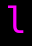
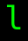

記号 l のモンスター / Monsters with symbol l
画面上で l と表示されるモンスター（35 種）。
Monsters displayed as l on screen (35).
← 記号から探す / Browse by symbol · モンスター索引 / Index
| ID | 記号 / Sym | 名前 / Name | 階層 / Lv | 希少度 / Rar | 速度 / Spd | 体力 / HP | AC | 経験値 / Exp |
|---|---|---|---|---|---|---|---|---|
| 70 | ピラニア Piranha |
3 | 1 | 120 | 2d6 | 8 | 9 | |
| 88 | メカジキ Swordfish |
4 | 2 | 120 | 5d12 | 10 | 15 | |
| 96 | バラクーダ Barracuda |
5 | 2 | 120 | 6d12 | 45 | 30 | |
| 1251 | ギンザメ Chimaera |
5 | 2 | 120 | 6d10 | 45 | 30 | |
| 187 | ジャイアント・ピラニア Giant piranha |
10 | 2 | 120 | 6d9 | 30 | 40 | |
| 220 | イクシツザチトル Ixitxachitl |
12 | 1 | 110 | 12d8 | 30 | 40 | |
| 918 |  |
チョウチンアンコウ Devilfish |
12 | 4 | 105 | 11d5 | 16 | 60 |
| 266 | 巨大タコ Giant octopus |
15 | 2 | 105 | 30d11 | 60 | 60 | |
| 913 | アンデッド・チョウチンアンコウ Undead devilfish |
15 | 4 | 105 | 15d5 | 20 | 75 | |
| 292 | シュモクザメ Hammerhead |
16 | 3 | 115 | 16d10 | 59 | 40 | |
| 317 | 白鮫 White shark |
18 | 1 | 120 | 10d10 | 50 | 68 | |
| 328 | イクシツザチトル・プリースト Ixitxachitl priest |
19 | 1 | 110 | 10d10 | 40 | 80 | |
| 345 |  |
鯨 Whale |
20 | 4 | 110 | 30d22 | 50 | 175 |
| 1335 | メメクラゲ Jellyfish |
20 | 4 | 110 | 12d12 | 40 | 100 | |
| 360 | フグ Globefish |
21 | 1 | 110 | 20d10 | 30 | 200 | |
| 363 | シャチ Killer whale |
22 | 1 | 115 | 30d10 | 55 | 85 | |
| 386 | 大白鮫 Great white shark |
24 | 2 | 120 | 100d6 | 70 | 250 | |
| 903 | クラーケンの子 Small kraken |
25 | 1 | 110 | 20d10 | 50 | 500 | |
| 406 | 吸血イクシツザチトル Vampiric ixitxachitl |
26 | 1 | 110 | 22d22 | 50 | 120 | |
| 467 | 『ジョーズ』 Jaws |
30 | 2 | 120 | 72d12 | 80 | 500 | |
| 1065 | 地蔵尊の蛸 Octopus of Kshitigarbha |
30 | 100 | 110 | 10d20 | 30 | 30 | |
| 482 | 巨大イカ Giant squid |
32 | 3 | 110 | 80d10 | 80 | 600 | |
| 1272 | セイレーン Siren |
35 | 3 | 120 | 80d20 | 50 | 500 | |
| 443 | タツノオトシゴ Seahorse |
36 | 2 | 120 | 111d11 | 60 | 860 | |
| 580 | 盲目のもの Flying polyp |
37 | 2 | 120 | 35d10 | 70 | 1000 | |
| 594 | 空飛ぶ鯨 Sky whale |
38 | 6 | 110 | 80d10 | 75 | 1750 | |
| 650 | 超大なる『ギガント』 Giganto the Gargantuan |
38 | 6 | 110 | 80d25 | 75 | 7750 | |
| 1042 | 幻の鯨『イッカク』 Narwhal |
40 | 20 | 130 | 25d100 | 100 | 6000 | |
| 669 | 『カリブディス』 Charybdis |
49 | 1 | 120 | 40d100 | 100 | 13000 | |
| 740 | レッサー・クラーケン Lesser kraken |
54 | 2 | 120 | 150d22 | 150 | 20000 | |
| 775 | グレーター・クラーケン Greater kraken |
63 | 2 | 120 | 40d100 | 175 | 25000 | |
| 788 | 『グラーキ』 Glaaki |
67 | 2 | 130 | 52d99 | 150 | 36000 | |
| 1345 | 巨大戦艦『グレート・シング』 GREAT THING, the Huge Battle Ship |
70 | 3 | 130 | 110d100 | 120 | 42000 | |
| 1304 | ネプト竜 Nepto dragon |
79 | 3 | 125 | 250d100 | 200 | 20000 | |
| 1391 | 幽体グレーター・クラーケン Spectral Greater kraken |
79 | 4 | 125 | 60d100 | 200 | 35000 |
🤖 このページは
lib/edit/MonraceDefinitions.jsoncから自動生成されています。手動で編集しないでください — 変更は次回の再生成で上書きされます。 This page is auto-generated fromlib/edit/MonraceDefinitions.jsonc. Do not edit by hand — changes are overwritten on regeneration. 生成 / Generated: 2026-07-09 02:28 UTC · hengbandfb8802bf02·tools/generate-wiki.mjs